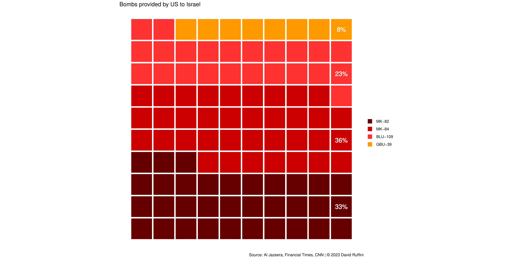

Le bombe utilizzate a Gaza
Le tipologie e le capacità distruttive
Successivamente all'attacco subito da Hamas, l'esercito israeliano ha bombardato pesantemente la Striscia di Gaza con l'obiettivo di distruggere l'intera struttura che si cela dietro il gruppo terrorista.
Le IDF (Israelian Defence Forces) hanno il supporto dei paesi occidentali e specialmente degli Stati Uniti, i quali costituiscono il principale fornitore di materiale bellico: al 05 dicembre 2023 le informazioni disponibili dicono che Israele abbia ottenuto dagli USA circa 15000 bombe.

Bombe fornite dagli Stati Uniti.
Le MK-82 e le MK-84 sono dette "dumb bombs", data l'impossibilità di guidarle e quindi di limitare le perdite civili, a causa della loro inaccuratezza. Anche le BLU-109 (Bomb Live Unit) non possono essere programmate, ma la loro caratteristica principale è quella di esplodere solamente dopo aver penetrato qualcosa. Il loro peso elevato, di circa 900 kg, permette di abbattere gli ostacoli che trova a terra e quindi di arrecare un maggior danno: vengono anche chiamate "bunker buster". Questa tipologia di munizione è già stata usata in passato, ma non andrebbe usata in zone densamente popolate come Gaza; la giustificazione delle IDF è che questa arma è necessaria al fine di distruggere i tunnel sotteranei utilizzati da Hamas.
Bombe fornite dagli Stati Uniti considerano i JDAMS.
Ci sono poi le GBU-39 (Small Diameter Bomb), bombe di precisione che, date le modeste dimensioni, permettono agli aerei di caricarne modeste quantità e di aumentare l'accuratezza della caduta, riducendo così le morti civili. Ci sono poi i JDAMS (Joint Direct Attack Munition): particolari sistemi che permettono di convertire bombe "stupide" in bombe guidate.
Ipotizzando che tutti i JDAMS siano utilizzati, stando ai dati consultati, le bombe fornite dagli USA sono costituite al 70% da "dumb bombs" e il restante 30% da armi guidate.
Un'inchiesta del Financial Times evidenzia come la campagna aerea di Israele sia una delle più pesanti della storia.

Confronto tra bombe guidate e non usate finora.
Fino al 05 dicembre 2023 Israele ha sganciato 29000 bombe sul suolo palestinese. La gravità dei bombardamenti non è dovuta solamente all'enorme quantità di esplosivo utilizzato, ma anche dalla sua tipologia e dalla conformazione dei territori colpiti: la Striscia di Gaza ha una densità di 4000 persone al km quadrato, quindi in poco spazio sono concentrati un gran numero di edifici, e l'utilizzo di bombe con capacità di distruzione elevate, come le BLU-109, ha fatto sì che, in neanche due mesi di conflitto, quasi il 70% degli edifici a Gaza sia stato severamente danneggiato.
Durante la Seconda guerra mondiale, alcuni dei bombardamenti più distruttivi compiuti dagli Alleati, come quelli di Amburgo, Colonia e Dresda, avevano distrutto rispettivamente circa il 75%, il 61% e il 59% de
delle strutture presenti.
Ciao!
Mi chiamo David, sono (sarò) uno statistico e in questo sito raccoglierò le mie analisi su argomenti che trovo di mio interesse.
I motivi principali che mi hanno spinto a pubblicare le mie ricerche sono il voler dare ordine a ciò che prima vagava solamente tra le cartelle del desktop e condividere con gli altri i risultati delle suddette indagini.
Se siete in disaccordo, riconoscete un mio errore o per qualsiasi altro motivo volete scrivermi, potete contattarmi nei canali che ho messo in fondo alla pagina.